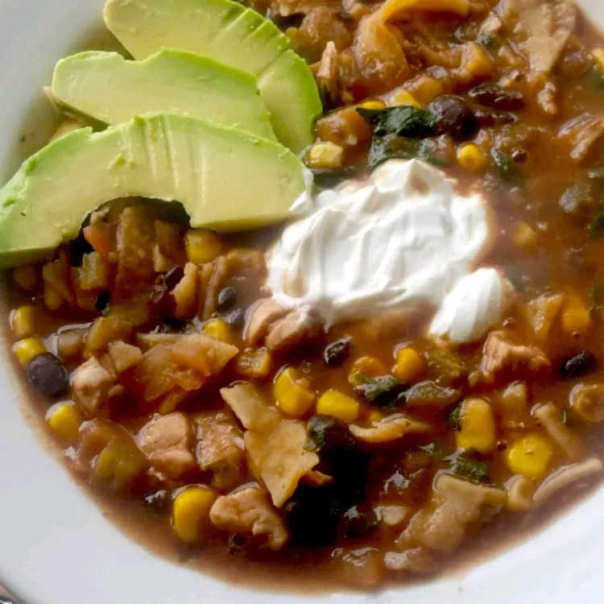

Chicken Tortilla Soup
Return to Recipes List

Description
Loaded with corn and beans, this soup is hearty enough for a main meal. Save time by topping it with purchased tortilla chips.
Ingredients
- 2 1/2 tsp vegetable oil
- 6 (6 inch) corn tortillas, cut into 1/2 inch strips
- 3 cups chicken broth
- 1/2 tsp ground cumin
- 1/2 tsp dried oregano
- 1 (15oz) can black beans, rinsed and drained
- 1 (15oz) can whole kernel corn, drained
- 2 skinless, boneless chicken breast halves, cut into bite sized pieces
- 1/2 cup salsa
- 1/2 cup chopped fresh cilantro
Steps
- Heat 2 teaspoons of the oil in a large pot over medium heat. Add half of the tortilla strips, stirring often, until crisp. Drain on paper towels. Repeat with remaining 1/2 teaspoon of oil and remaining tortilla strips and set aside.
- Add the broth, cumin, chili powder and oregano to the pot. Raise heat to high and bring to a boil. Add the beans, corn, chicken and salsa. Reduce heat to low, stir and simmer for about 2 minutes, or until chicken is cooked through and no longer pink inside.
- Add the cilantro and half of the reserved tortilla strips. Ladle into individual bowls and garnish each bowl with some of the remaining strips.